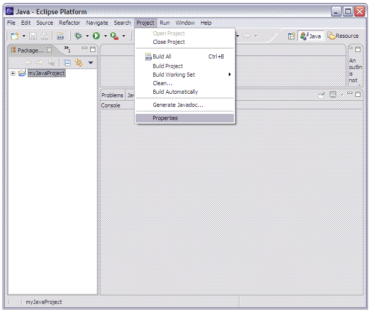
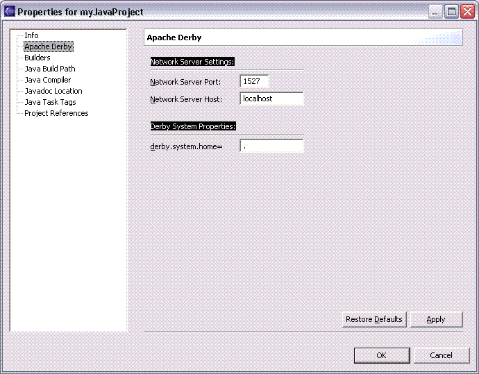

Properties relating to Apache Derby can be specified for any project which has had the Apache Derby nature added to it. The two categories of properties available to change are the Network Server and Derby System properties.
Network Server Properties
By starting the Derby Network Server using the default values the server runs on the localhost, which is the host running Eclipse, on port 1527.
The value used for the Network Server host name impacts the ability of remote hosts to connect to the Network Server. If the Network Server Host value in the Apache Derby Properties for the project is set to localhost, only clients running on the host where Eclipse is running can connect to the network server. If an ip address or hostname (other than the name 'localhost') is used, client applications running on other hosts can connect to the Derby Network Server. For additional information about starting the Derby Network Server see the Derby Server and Administration Guide. The section called Starting the Network Server explains the effect of setting the value for the hostname differently.
If connections from other hosts is allowed, it is recommended to run under the Java security manager and enable user authentication prior to starting the Derby Network Server.
Network Server Settings
Derby System Properties
derby.system.home refers to the file system directory where the Derby database system will look for databases when Derby is started. Setting this property allows for ease of use when specifiying a JDBC connection URL to a Derby database which is not in the current directory. For additional information on derby.system.home refer to the Tuning Derby guide.
Derby System Property values

